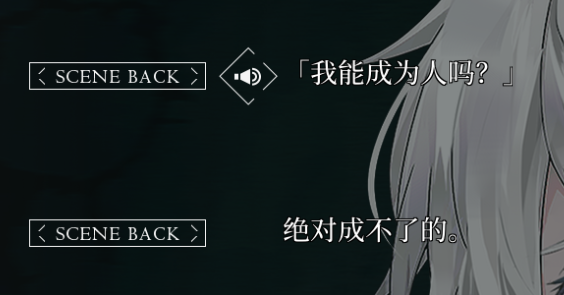
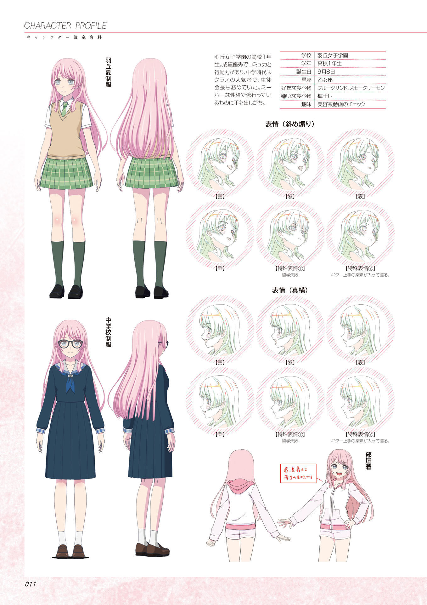
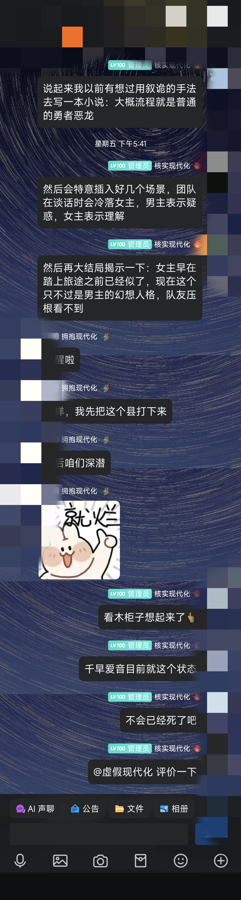

来谈谈千早爱音和It's MyGO!!!!!!
看完MyGO就想锐评一下的，还能赶在Ave Mujica第六集开播前写完吗。
我就应该把MyGO和Mujica的评价分开写……
本文不参考编剧访谈、Character Voice营业、游戏相关、周边漫画、小剧场、设定集、BanG Dream前作剧情等补充内容，完全且仅基于It’s MyGO!!!!!和Ave Mujica的正片进行评价，各种推论并无官方材料背书，仅代表个人感受。
BanG Dream! It’s MyGO!!!!! 春の陽だまり、迷い猫还没看过，这里不考虑该作品。

关于第七集，我不想说的太失礼：
CryChic建议绑死一辈子打包下葬。

关于第八集：看完之后心里已经波澜不惊了，板上钉钉的烂。
以下折叠内容为Mujica第七集放送前的原文：
总体评价
MyGO篇幅简短、台词简洁、信息密度高，剧情有条理有呼应，人物刻画细腻，冲突激烈有梗。但结尾完成度不高，部分剧情发展生硬。
单看的话，我觉得是一部非常值得反复观看的作品，常看常新（前提是你不怕胃痛）。后续如果Ave Mujica烂尾的话，会再额外扣分。
Mujica观感不是很好，公式化剧情以及工业化人际关系，所有人都跟提线木偶一样被编剧的大手推动。
人物评价
毕竟这种番，看的就是角色和人际关系。
千早爱音
mujica片场的话对爱音没什么新看法，不过编剧写的有点刻板印象工具人化了，我还挺不满的，这里带着mygo的印象说说吧，尽量只依据MyGO和mujica本篇，均为个人看法：
爱音的三分钟热度很大程度上来自于她双商太高了，从小到大没遇到什么困难，此路不通换一条照样玩出花。这点我倒不觉得有什么所谓，有三分钟热度就有三分钟收获，及时止损是非常明智的。
我猜她的超级大脑平时有两种工作模式，低耗能的时候其实挺放松的说话也比较直，但是一察觉不对就能切到高耗能飞速运转力挽狂澜。其实我认为从性格上看，MyGO里和爱音相性最好的是立希，这俩人到现在关系还有点尬（就是有点…不坦率？…），只能说相互的初始印象太差了好感度没涨上来？或者立希因为灯而吃醋了？
外热内冷，没错，我看MyGO也是这个看法。爱音并没表面看起来那么喜好社交，更多只是为了融入集体的社交技能，不喜欢尴尬的氛围而找话题活跃气氛。其实内心温柔和理性并存，思路非常清晰而且行动力强。超出能力范围的承诺绝对不会做，爱音对“一生”的承诺是非常认真的，并没有跟着氛围随大流去答应，后来其他人都重新思考了“一生”的含义。而到第十三集，爱音能说出“我也会试着努力的”，其实对爱音这种性格的人来说，已经算是作出承诺了。
所以我现在非常担心mujica爱音的状态，毕竟爱音并不是一个真正的无限热源，队内持续不断抗的压就像尼奥斯湖积攒的二氧化碳一样，不知道会不会在未来的某一日达到临界点而爆发。（就mujica篇幅来讲看到这一天的可能性几乎没有)。
爱音大部分时候和高松灯的关系就像泰坦和铁驭一样，连体行动。灯说不出口的话，要替灯说出口；灯做不到的事，要替灯去做。爱音对灯的感情和其他人是明显不同的，可能目前爱音留在MyGO最主要的理由是灯需要她，爱音需要通过吉他展示自我，MyGO的吉他位也总会有爱音的位置。但是要想把爱音狠狠拴在MyGO里，目前的团队氛围明显是不对劲的，需要和其他成员建立更深的羁绊。
就这些吧，后面想到了再补。
高松灯
高松灯，说实话我好感度一直不高，MyGO涉及到灯就有浓烈的编剧的大手的味道，令我很反感。其人际关系，与其他人对比就很怪，不是什么“重力吸住了”就能搪塞过去的。
崩坏的开始
Soyo和Taki嘴遁，Soyo明明表示我就是利用了Anon和Rana，怼了Taki只在乎Tomori，Taki也无话可说。按理说后面要先安抚Anon，保证Anon不会退队，再去争取Tomori。结果此时编剧必须要形成一个Anon退队，将MyGO炸的满天星的局面，以便进入下一个局面：诗超绊、以确立Tomori在队内的重要地位，但是又不能太彻底，不然Anon直接找红绿灯组队不回来了。
同时诗超绊这里需要牺牲一下Anon，脚本和原画发力，Anon必须主动且巧妙地原谅Soyo，以给Soyo颁发归队许可证，最大受害者都原谅Soyo了，观众自然无话可说，至此“圣”这一属性已成Anon不可分割的一部分。
后续无限为CryChic补充的回忆剧情，反复为CryChic招魂，CryChic的复活，而CryChic本身只存续了一个月。CryChic解散到目前已经在正剧反反复复放了四遍了，并且还在不停用认知滤镜刷新各种新剧情。CryChic充斥着Saki的各种承诺，但是都没有兑现，按理说梦早该碎了，真那么团结美好为什么能光速去世。
MyGO的人物虽然多但是关系却并不复杂，两两弱关系性，脸谱化。
在对话上都刻意孤立Anon。
MyGO全员都是Tomori的工具人，以Tomori为中心的星型拓扑，刻意锁人物关系。
某些世界观不能只在需要推剧情的时候才出现。
Muzimi的双重人格设定，为什么一定要安排Mortis出场炸团。
Mujica某些人物台词合理但不合情。——不上秤轻如鸿毛，上了秤重如泰山。
Saki大小姐过家家。
CryChic后果需要Anon去买单，Anon处于风暴中心，而CryChic原成员却隐身。
未竟之业——MyGO缺少的交代
MyGO第12集是Live集，13集主要给Ave Mujica造势，这就导致MyGO本身是不完整的，很多问题一笔带过，但这两部作品从此便再无法分开来看，Ave Mujica烂了势必要影响到MyGO。
MyGO即使在完结时，其实是并没有什么团魂的，人际关系也尴尬，倒也是契合“迷茫中前进”的主题。
恶意推测编剧创作思路
只有Tomori、Saki是一开始定下的主角，这两位无论如何都要处于人际关系的最中心，Soyo是一周目BOSS，这三个人组成了一个三体问题。Anon是为了方便剧情推进而创作的工具人，其他人都是凑人头开这局游戏的。
围绕CryChic的解体这一事件进行关于人和人之间的冲突创作。
编剧很明显是会为了达成某种场面而不惜崩坏人设的写法。后面有时间详细举例（Anon离队、）说说。
最先有的人设，然后想出名场面，再通过刻意设计的剧情发展串起来。
转折点重拿轻放，也就是问题抛出时炸得震天响，但是解决方式却平平淡淡。
Ave Mujica就目前来看，第四集被第五集实锤观感过于诡异，上限已经定死了，不会再超过MyGO。究竟是二次元《红楼梦》，还是大河内一楼在创作《窗外》呢？
待定
希望能在第六集开播前写完。
题外话
这里开始考虑剧组设定集与官方MV、小剧场。
宗教意象
根据Ave Mujica的OP和其他的官方线索来看，角色在圣经·新约中似乎可以找到对位的人物。
| 角色 | 新约人物 | 对应 |
|---|---|---|
| 千早爱音 | 玛利亚 | 生日 |
| 丰川祥子/Oblivionis | 耶稣基督 | 受难和复活 |
| 高松灯 | 约翰（John） | 在最后的晚餐中靠近耶稣，唯一在十字架下的门徒，并被钉在十字架上的耶稣托付照顾他的母亲玛利亚（约翰福音 19:26-27）。 |
| 施洗约翰（John the Baptist） | 耶稣的表亲，为耶稣施洗，宣告耶稣为神的羔羊（约翰福音 1:29）。 | |
| 长崎爽世 | 彼拉多（Pontius Pilate） | 在耶稣的审判中，他对耶稣的无辜表示怀疑，但在压力面前仍然判决耶稣被钉十字架（马太福音 27:11-26）。 |
| 椎名立希 | ||
| 要乐奈 | ||
| 三角初华/Doloris | 犹大·伊斯卡里奥特（Judas Iscariot） | KiLLKiSS Judy, KiLLKiSS Judu, KiLLKiSS Juda |
| 祐天寺若麦/Amoris | 多马（Thomas） | 对基督的怀疑转变到相信。 |
| 若叶睦/Mortis | 雅各（James） | 耶稣的兄弟 |
| 八幡海铃/Timoris | 彼得（Peter） | 倒吊人。在耶稣被捕和审讯期间，彼得三次否认认识耶稣，尽管他之前曾表示绝不会离弃耶稣（马太福音 26:69-75）。这段经历展示了他的脆弱和恐惧，和Timoris的代号呼应。 |
剧组做人物设定时可能参考了新约，但后续发展基本不可能强行对应，仅供娱乐。

爱音的生日9月8日为圣母玛利亚诞辰，爱音乘坐777次航班抵达成田机场，标志故事的开始。
几个爆论
爱音其实没表面看起来那么喜好社交
其他人看到春日影歌词时都联想到自己，只有爱音反应过来是灯内心的呐喊
CryChic演奏水平并没有很高
MyGO里的回忆是不真实的，黑刀之夜几个人的回忆细节完全对不上，所以高松灯回忆里第一视角CryChic的Live水平也可能是美化过后的，实际演出效果就是“主场太拼命了”。这也能解释为啥爱音看了CryChic的春日影录像之后并没有感受到什么压力。
Mujica片场里MyGO不和的氛围，是否为契诃夫之枪？
如果为契诃夫之枪，什么时候响？这么做的意义是什么？
我觉得更大的可能是：编剧觉得MyGO的氛围就该是这样的……不会编剧觉得自己写的MyGO团内互动老有意思了吧？

乐器考据
如果Mujica结尾能差强人意，考虑入点MyGO的周边。